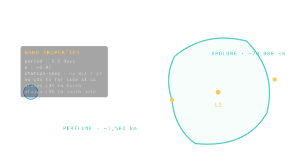

NRHO — Near-Rectilinear Halo Orbit
A nine-day egg-shaped orbit around the Earth-Moon L2 point — the chosen home of NASA's Lunar Gateway.

101 · zoom in
NRHO is the orbit NASA picked for Gateway, the small space station that will live near the Moon starting in the late 2020s. The acronym stands for Near-Rectilinear Halo Orbit — a phrase that means almost nothing until you see the shape. Imagine an egg, stretched, balanced almost-but-not-quite at the L2 Lagrange point on the far side of the Moon. The spacecraft loops around it once every nine days.
Why this specific orbit, out of all possible orbits? It's a perfect compromise. It costs almost no fuel to maintain — about 5 metres per second per year of station-keeping, which is essentially free. It always has a clear line of sight back to Earth, so radio contact is never blocked by the Moon. And one end of the egg dips close enough to the Moon that landers can drop to the south pole and come back without huge ∆v cost.
Artemis II will be the first crewed flight to NRHO. Artemis III will dock there to transfer to a Starship-derived lander. Beyond Gateway, NRHO is being studied as the staging ground for future crewed Mars missions — a place to assemble big spacecraft far from Earth's gravity well.
An NRHO is a halo orbit — a periodic three-body trajectory that loops around a Lagrange point — but stretched until one end nearly touches the Moon's south pole. It looks more like a polar orbit than a halo, hence 'near-rectilinear.' Each loop takes about 6.5 days at perilune (close to the Moon) and 9 days for a full revolution.
Why this orbit? Stability with low ∆v upkeep — about 5 m/s per year of station-keeping. Continuous line-of-sight to Earth (Gateway never goes behind the Moon for long). Low-cost ∆v access from Earth (around 4 km/s for transfer + insertion, comparable to LLO but with way better thermal stability). Lunar surface access via small landers from perilune.
Gateway will be the first crewed deep-space station, occupying NRHO from the late 2020s onward. Artemis II will be the first crewed flight to NRHO; Artemis III will dock there to transfer to the lander. Beyond Gateway, NRHO is the staging ground for crewed Mars architectures.
SEE IN THE APP
- /missions Artemis II / III rendezvous with Lunar Gateway in NRHO